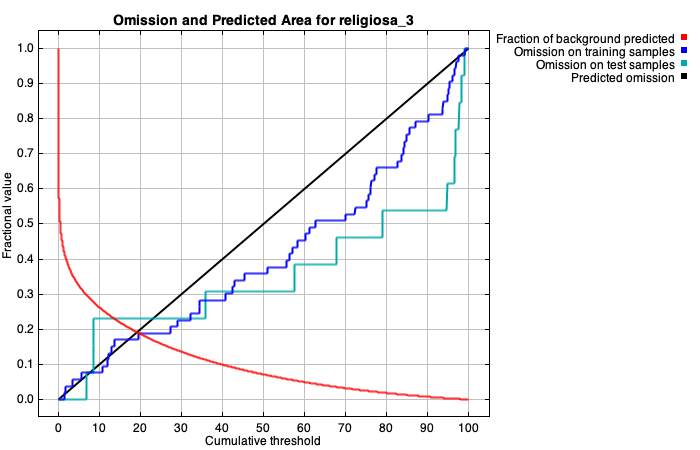
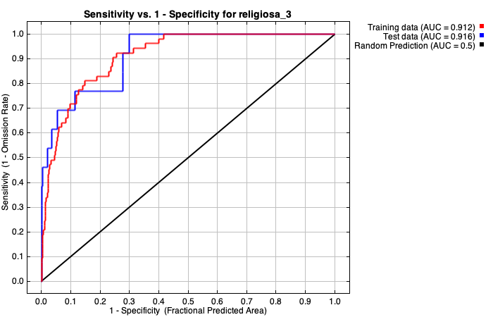
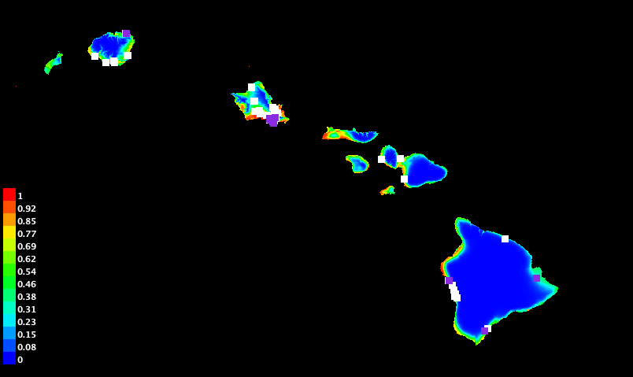

| Cumulative threshold | Cloglog threshold | Description | Fractional predicted area | Training omission rate | Test omission rate | P-value |
|---|---|---|---|---|---|---|
| 1.000 | 0.043 | Fixed cumulative value 1 | 0.442 | 0.000 | 0.000 | 2.434E-5 |
| 5.000 | 0.160 | Fixed cumulative value 5 | 0.324 | 0.057 | 0.000 | 4.323E-7 |
| 10.000 | 0.249 | Fixed cumulative value 10 | 0.262 | 0.075 | 0.231 | 1.933E-4 |
| 1.437 | 0.058 | Minimum training presence | 0.418 | 0.000 | 0.000 | 1.18E-5 |
| 11.889 | 0.277 | 10 percentile training presence | 0.244 | 0.094 | 0.231 | 1.028E-4 |
| 19.620 | 0.370 | Equal training sensitivity and specificity | 0.189 | 0.189 | 0.231 | 9.288E-6 |
| 10.627 | 0.260 | Maximum training sensitivity plus specificity | 0.256 | 0.075 | 0.231 | 1.562E-4 |
| 13.541 | 0.300 | Equal test sensitivity and specificity | 0.231 | 0.151 | 0.231 | 6.065E-5 |
| 6.758 | 0.198 | Maximum test sensitivity plus specificity | 0.298 | 0.075 | 0.000 | 1.488E-7 |
| 1.437 | 0.058 | Balance training omission, predicted area and threshold value | 0.418 | 0.000 | 0.000 | 1.18E-5 |
| 7.914 | 0.220 | Equate entropy of thresholded and original distributions | 0.284 | 0.075 | 0.077 | 2.679E-6 |

| Variable | Percent contribution | Permutation importance |
|---|---|---|
| Clipped_elev | 53.4 | 0 |
| mean_temp_final3_ready | 38.8 | 92.9 |
| Bioclim2 | 3.3 | 4.5 |
| Clipped_bioclim3 | 2 | 0 |
| Clipped_bioclim12 | 1.9 | 1.9 |
| Clipped_bioclim18 | 0.4 | 0.4 |
| Clipped_bioclim15 | 0.2 | 0.2 |
| Clipped_bioclim4 | 0 | 0.1 |
| Clipped_bioclim14 | 0 | 0 |